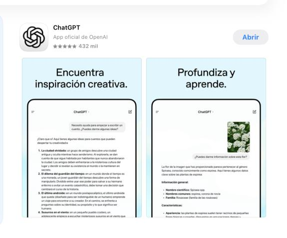
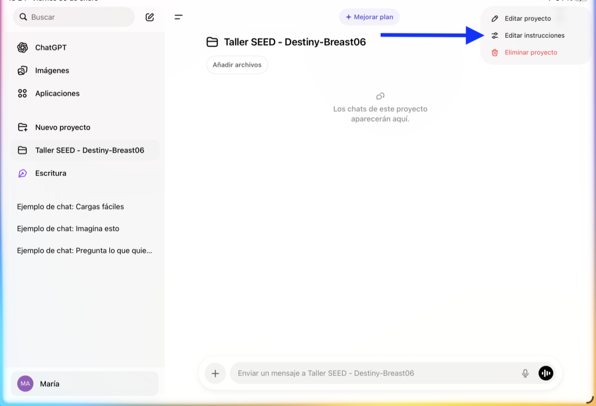
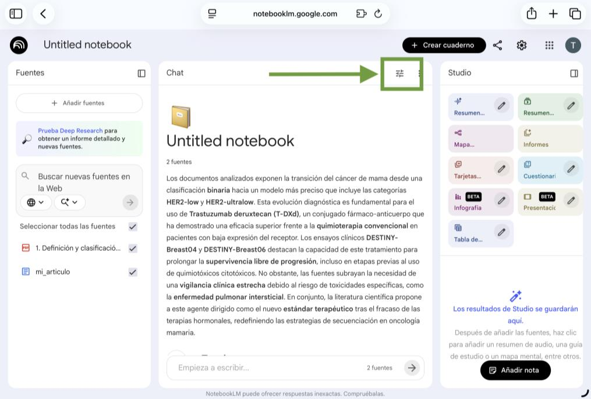
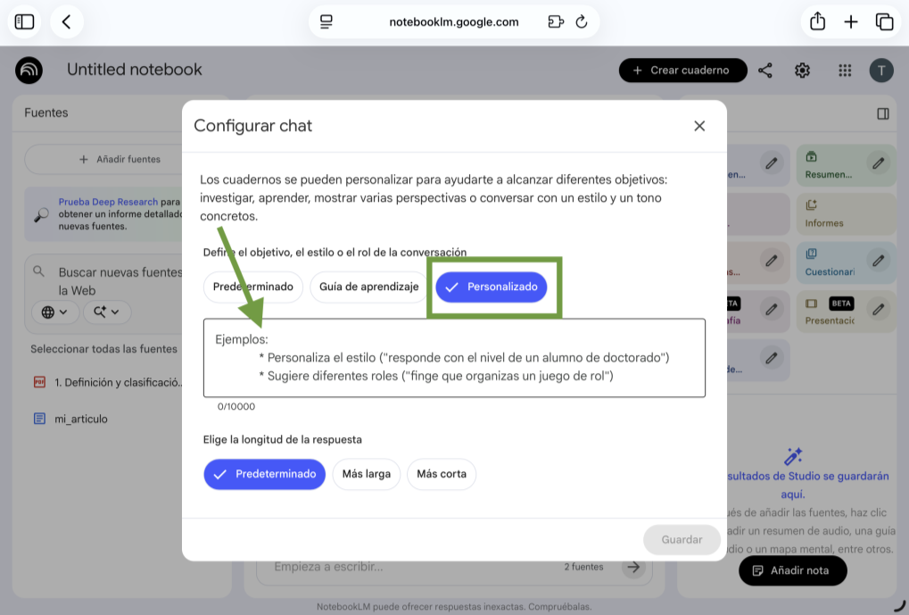
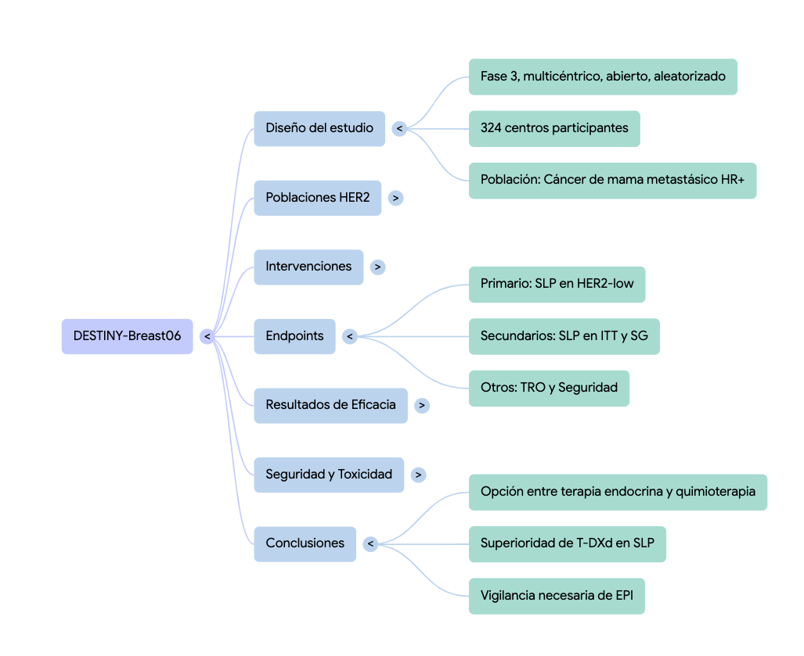
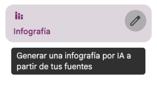

Ayuda a preparar tu manuscrito con IA
Preparar el proyecto en ChatGPT
1 Abrir ChatGPT
Desde iPad: Abre la app de ChatGPT en el iPad. Si no la tienes, descárgala desde la App Store (busca "ChatGPT" de OpenAI).
También puedes acceder desde el navegador si estás trabajando en un ordenador.
Desde portátil: Ve a https://chatgpt.com/ y accede con tu cuenta.
Accede con una cuenta, por ejemplo, de Gmail.
2 Crear un proyecto
- Pulsa el icono de menú arriba a la izquierda para abrir la barra lateral.
- Pulsa "New project" o "Nuevo proyecto".
- Nombre del proyecto: Taller SEED – Destiny-Breast06
3 Configurar instrucciones del proyecto
Pulsa en el icono los 3 puntos arriba a la derecha (…) del proyecto y pega estas instrucciones:
4 Subir los archivos
Descarga estos dos archivos y súbelos al proyecto:
Construir el artículo paso a paso
Ahora vamos a construir un artículo científico completo usando los datos del ensayo DESTINY-Breast06. Copia y pega cada prompt en el chat del proyecto, revisa el resultado y pasa al siguiente.
Prompt 1: Empezamos por la introducción
Tiempo estimado: 1 min
Si tienes versión de pago de ChatGPT (es lo más recomendable), comprueba qué modelo está usando. Si tienes la versión gratuita usará el modelo básico por defecto.
Copia y pega en el chat del proyecto:
Observa cómo es una conversación en la que se habla de los datos, se pide y se contestan preguntas. Es importante usar ChatGPT como herramientas en las que apoyarnos, no como herramientas en las que delegamos.
Comparación con el original
Vamos a comparar nuestro manuscrito con el artículo publicado en NEJM. Para eso, vamos a usar otra herramienta: NotebookLM.
1 Acceder a NotebookLM y crear cuaderno
Ve a notebooklm.google.com (necesitas cuenta de Google).
Tenemos que subir las fuentes. Vamos a elegir el artículo original del NEJM y el nuestro que acabamos de preparar con ChatGPT:
Sube ambos a tu nuevo cuaderno.
2 Personalizar NotebookLM
¿Por qué cambiamos de herramienta?
En ChatGPT hemos trabajado dentro de un proyecto que tenía instrucciones ("colega crítico"), archivos subidos y el historial de toda la conversación. ChatGPT "sabía" quiénes éramos, qué queríamos y con qué datos trabajábamos.
NotebookLM también utiliza prompts generales de contexto, igual que ChatGPT. Vamos a hacer lo mismo.
En la columna central buscamos el icono que representa los filtros y pinchamos en él. En el apartado donde se puede definir el objetivo, estilo, etc., pincha en Personalizado y completa con el prompt:
 3 Comparar nuestro manuscrito con el de NEJM
Con las dos fuentes seleccionadas en el menú lateral izquierdo, escribe en el cuadro de texto central:
Si nos damos cuenta de que nuestro artículo no está como nos gustaría, podemos pedirle en el chat de NotebookLM que nos ayude a mejorarlo. No te quedes en la petición y aceptar lo que te dé como respuesta: usa tu sentido crítico y pregunta por qué te da un dato o una sugerencia, en base a qué y qué aportará a tu artículo con esa inclusión.
4 Generar una tabla de datos
Cuando hemos redactado el artículo con ChatGPT, hemos trabajado sección a sección: introducción, métodos, resultados, discusión. Pero nos ha faltado la Table 1, la tabla de características basales que aparece en cualquier artículo de un ensayo clínico.
Esta tabla requiere datos exactos: cifras, porcentajes, medianas. No es un texto que se redacta, es una extracción precisa de números. En teoría, NotebookLM es la herramienta ideal para esto: trabaja sólo con lo que le das, cita de dónde saca cada dato y no inventa.
Seleccionamos sólo el artículo del NEJM como fuente activa (desmarcando nuestro manuscrito) y le pedimos:
Haz lo mismo usando la opción de Tabla de datos del apartado Studio (a la derecha de NotebookLM). Pincha en el "lapicero" para poder incluir el prompt anterior. Selecciona idioma inglés y pega el prompt.
Ahora con los datos en crudo
Sube los datos en crudo de nuestra investigación como nueva fuente. Desmarca el artículo del NEJM y selecciona sólo el archivo de datos en bruto como fuente activa. Pídele:
NotebookLM genera la tabla completa con todos los datos correctos y citando la fuente. Fíjate que es posible que no haya seleccionado todos los datos o los mismos datos que en la tabla anterior. Este tipo de comprobaciones siguen siendo tarea humana.
5 Generar un mapa mental
Esta herramienta puede ser muy útil para organizarnos antes de empezar a escribir nuestro artículo. Podemos seleccionar como fuente todos los datos de nuestra investigación y seleccionar la opción "Mapa mental" del apartado Studio de NotebookLM.
En el propio NotebookLM se trata de un mapa interactivo que permite explorar las conexiones entre los conceptos del estudio.
6 Generar un póster científico
Imaginemos que el manuscrito que hemos redactado ha sido enviado a NEJM y rechazado. Decidimos presentar los resultados como póster en un congreso nacional de oncología.
NotebookLM puede generar infografías. En el panel de las fuentes, a la izquierda, marcamos la fuente que queremos usar (por ejemplo, el artículo del NEJM). Pinchamos en el lapicero de la infografía para personalizar:
Evaluación del resultado
Lo que está bien
- Estructura de 3 columnas clara
- Gráfico de barras PFS comparativo
- Donuts de ORR (56,5% vs 32,2%)
- Español correcto
- Iconos apropiados
- "Congreso Nacional de Oncología Médica" al pie
Lo que falta
- Sin línea de autores ni filiación
- Sin referencias
- Sin QR
- Sin placeholders de logo
Resultado de la infografía generada con un prompt genérico. Cada infografía será diferente de la anterior.
Conclusión: Visualmente es atractivo y la estructura es buena, pero es escaso para un póster de un congreso nacional. Además, ya se descarga en PDF por lo que es un buen punto de partida.
¿Se puede hacer mejor? Sí, y la clave está en algo muy útil: las fuentes no tienen que ser sólo artículos o datos. Pueden ser instrucciones.
7 Añadir una guía de estilo como fuente
Hasta ahora hemos subido a NotebookLM datos del estudio: el artículo, los datos en crudo, nuestro manuscrito. Pero una fuente puede ser cualquier documento de texto, incluidas instrucciones de diseño.
La idea es sencilla: si escribimos en un documento las reglas que queremos para nuestro póster (colores, estructura, límites de palabras, qué destacar), y lo subimos como fuente, NotebookLM lo usará como guía al generar la infografía.
Esto es muy potente porque significa que puedes crear tus propias plantillas reutilizables. Una guía de estilo para pósters de tu grupo de investigación, otra para presentaciones, otra para resúmenes de congresos. Las subes como fuente y desde el prompt le dices que las siga.
¿Qué lleva una guía de estilo para un póster?
- Paleta de colores (con códigos hexadecimales para que sean exactos)
- Estructura por columnas y secciones
- Límite de palabras por sección (para que quepa en el póster)
- Qué destacar visualmente (el resultado principal, las conclusiones)
- Tipografía y jerarquía de títulos
- Reglas: no inventar datos, citar fuentes, formato de resultados numéricos
Puedes pedirle a ChatGPT que te ayude a generar el archivo en formato YAML (un formato estructurado para que la máquina lo lea fácilmente). Sólo tienes que pedirle que te ayude a crear ese archivo y que para ello te vaya preguntando lo que necesite. Consulta el Anexo 2 (documento aparte) para ver un ejemplo completo.
Resultado con guía de estilo YAML: autores, referencias, [LOGO] y estructura controlada.
Compara el resultado con el del Paso 6. La diferencia es evidente: misma herramienta, mismos datos, pero con instrucciones precisas el resultado es mucho más profesional y controlado.
El mensaje es claro: la calidad del output no depende sólo de la herramienta, sino de la calidad de las instrucciones que le damos. Y esas instrucciones se pueden guardar, compartir y reutilizar.
8 Audio Overview y Video Overview
NotebookLM puede generar resúmenes en formato audio (un podcast entre dos presentadores que discuten el contenido) y en vídeo. Es una forma completamente distinta de procesar la información: en vez de leer, escuchas un debate sobre tu estudio.
En el Studio, selecciona Audio Overview o resumen de audio. Antes de generarlo, puedes configurar opciones pinchando en el lapicero:
- Formato: Información Detallada, Breve, Crítica o Debate. Para este ejercicio, elige Debate.
- Idioma: Puedes seleccionar el idioma de salida directamente.
- Duración: Corto o Predeterminada. No se puede elegir ni prever la duración exacta del podcast.
En el campo de personalización, pega estas instrucciones:
Haz lo mismo con Video Overview usando las mismas instrucciones. En el vídeo puedes seleccionar el formato: vídeo explicativo o video breve. También puedes elegir el idioma de salida y el estilo visual.
Escucha el audio y mira el vídeo. Fíjate en cómo presentan los datos, qué puntos enfatizan, qué preguntas plantean. ¿Te ha dado alguna idea para tu propia presentación que no habías considerado al leer el artículo?